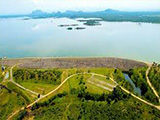

About Us
Historical Background The original idea of diverting the Mahaweli Ganga was very much in the minds of our ancients. They diverted it at minipe, Kalinga, and Kandekadu along the main river. they also diverted the main branch of the mahaweli, namely, the Ambanganga , at Elahera and Angamadill. and classical way.
Mahaweli Overview
Our hydraulic civilization had a temporary setback in the 11th century with the incursion of chola invaders when they laid waste the irrigation works in the rajarata, and the capital Anuradhapura had to be shifted to polonnaruwa. .
civilization reached its climax under Parakrama Bahu the Great in the 12th century. His motto was: "It is not meet that men like us Should live and enjoy what has come to our hands And not care for the people.
The lesson we learn is that we should emulate the wisdom of the ancients by encouraging the reforestation of the upper catchment rather than building new damslike upper kothmale.
Our Service List
which could control water issues up to a water head of 30 feet, or 10 metres. When they had to control water heads over 30 feet they solved this complex problem by simply replicating the sluices at different levels, so that they always operated them at heads of less than 30 feet starting from the topmost sluice. .
These instructions were clearly inscribed in stone for all to strictly follow; any deviation from these instructions would have spelt disaster, with the sluice failing.